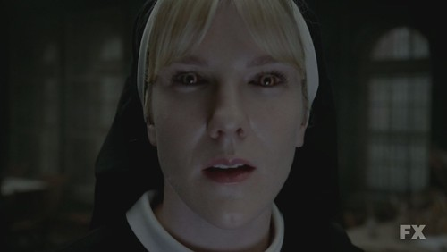

<!DOCTYPE html>
<html lang="en">
<head>
    <meta charset="UTF-8">
    <meta name="viewport" content="width=device-width, initial-scale=1.0">
    <title>Document</title>

    <link rel="stylesheet" type="text/css" href="style.css"/>

</head>
<body>
    
</body>
</html>
   
     <div class="caixa">
          <h1></h1>
          <li><a href="index4.html">3 temporada</a></li>

          <h1> Asylum é a segunda temporada da série de televisão American Horror Story.Asylum é a segunda
             temporada da série de televisão American Horror Story, A história segue os pacientes, médicos   
             e freiras que ocupam a Instituição Mental de Briarcliff, em Massachusetts, Estados Unidos, no ano
             de 1964. A instituição é comandada pela Irmã Jude Martin, com sua capacho fiel, Irmã Mary Eunice
             McKee. Briarcliff foi fundada pelo monsenhor Timothy Howard para tratar de criminosos insanos. O 
             psiquiatra Dr. Oliver Thredson e o cientista Dr. Arthur Arden tratam os pacientes dentro das 
             instalações. Os pacientes, muitos dos quais afirmam ser internados injustamente, incluem a 
             jornalista lésbica Lana Winters, o acusado de ser um serial killer, Kit Walker, e a suposta 
             assassina, Grace Bertrand.</h1>


            
       